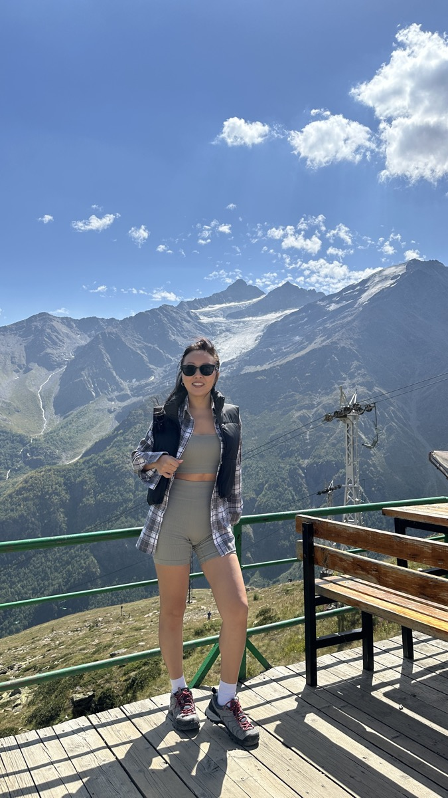
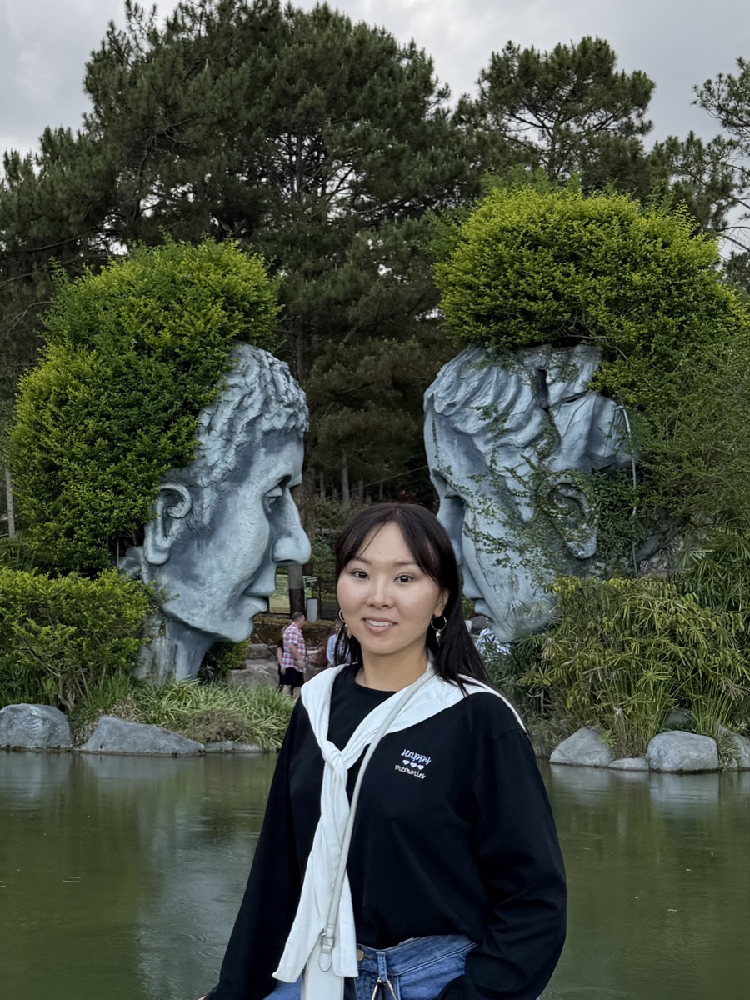
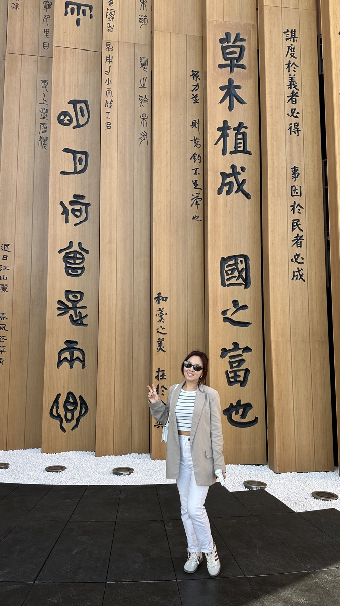
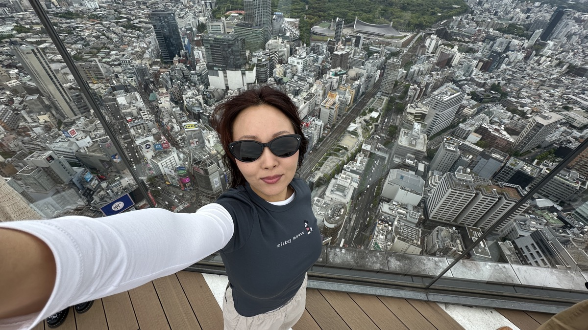

Продуктовый дизайнер с образованием бизнес-аналитика
Проектирую сложные B2B-сервисы, собираю дизайн-системы и веду продукт от исследования до передачи в разработку.
Старший продуктовый дизайнер — Синергия
Результаты: MVP онлайн-поступления — 1 000+ заявлений; 40 000+ студентов и 1 000+ преподавателей; дизайн-система сократила разработку на 50%.
UX-исследования (интервью, бенчмаркинг, юзабилити-тесты), сценарии и прототипы, дизайн-система, дизайн-ревью до релиза.
Проекты: LMS (обучение, курсы, тесты), ЕЛК — личный кабинет студента, мобильное приложение.
Продуктовый дизайнер — QSoft
Интранет для Сбера; корпоративный портал банка «Открытие» на 22 000+ сотрудников; платформа приёмки и диагностики автомобилей для Kia; приложение корпоративного портала для Иркутской нефтяной компании.
UX/UI дизайнер — Фриланс
Сайт для фармацевтического холдинга Boiron и продуктовых страниц: Оциллококцинум, Стодаль, Гомеовокс.
Магистратура · Бизнес-информатика — СПбГУТ им. Бонч-Бруевича, 2015
Продуктовый дизайн — Яндекс Практикум, 2022
Менторство — MAX Studio, 2023
Психология — учусь сейчас
Свяжемся?



